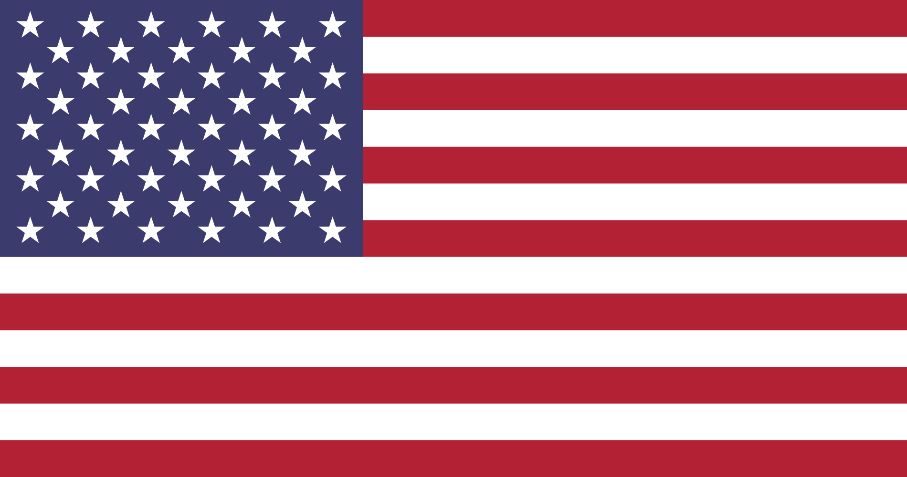

Public filings · Canada · UK · US
Got the balls to read where your Dasvandh goes?

Not affiliated
Every number in the next 9 slides comes from their own government filings.
Swipe →
How it's set up
One brand. Three charities. Three countries.
Basics of Sikhi SocietyCanada · reports to CRA
 Everythings 13UK · Charity Commission
Everythings 13UK · Charity Commission
Everythings 13US · reports to IRS
Its US tax return lists the projects under the banner: Basics of Sikhi, Sikh Press Association, Mighty Khalsa, Kiddie Sangat. No single regulator sees all three.
95¢
of every $1 the charity spent went to consultants it doesn't name.
C$97,021 of C$102,334. No names. No description of the work.
Source: CRA T3010, Basics of Sikhi Society, BN 752991695RR0001, 2024, lines 4860 and 5100.
Canada · share to consultants
7¢ to 95¢ in three years.
7%2021
79%2022
88%2023
95%2024
Share of total spending (line 5100) paid as professional and consulting fees (line 4860). Source: CRA T3010 returns 2021–2024.
How much went to the actual work? Not reported.
The teaching. The videos. The outreach. The charity reported its program spending up to 2020. From 2021 — the year the consultant money took off — it left that line blank. Four years running.
Source: CRA T3010 returns 2018–2024, line 5000 (charitable programs). Blank is not zero; it means the charity didn't say.
United Kingdom · Everythings 13
The biggest arm. £623,030 last year.
12staff on its payroll
£86,672spent raising money in 2025
+83%rise in fundraising costs, 2023→2025
+6%rise in income over the same two years
The UK arm runs a payroll. The Canadian arm pays almost everything to unnamed consultants.
Source: Charity Commission for England and Wales, charity 1143262, annual returns 2023–2025.
$230,172 of $230,176 booked as “government grants.”
Which government? The return doesn't say. Only $4 came from anyone else. The usual explanation, a pandemic wage refund, doesn't fit: 2021 wages were just $7,247.
Source: IRS Form 990, Everythings 13, EIN 32-0647672, tax year 2024, Part VIII line 1e.
Wages were bigger than every donation.
$130,794wages and benefits
$120,559everything donors gave
$0paid to officers, it says
−$70,826drop in savings in one year
So who got the wages? The return doesn't have to say — it only names people paid over $100,000.
Source: IRS Form 990-EZ, Everythings 13, EIN 32-0647672, tax year 2025 (filed May 14, 2026).
What happened when people asked
People asked. The posts were deleted.
r/SikhWhere do the donations actually go?
r/SikhpoliticsCRA filings: 95% to consultants?
commentHere are the public numbers…

No names. No accusations. Just their own filings. One comment was gone within minutes. No one from the charities has answered.
Is this where you thought your money went?
We're not saying anyone broke the law. We're saying you can't see where the money goes — and only they can show you.
1Who are the consultants, and are any of them tied to the board?
2How much actually reached the teaching, videos and outreach?
3Who does the work, and who gets paid where, across all three?
Every source: link in bio
send it to someone who gives
Independent. The Sangat's Ledger is not affiliated with Basics of Sikhi, Everythings 13 or their projects. Logos shown only to identify the organizations discussed. Corrections: sangatledger@gmail.com